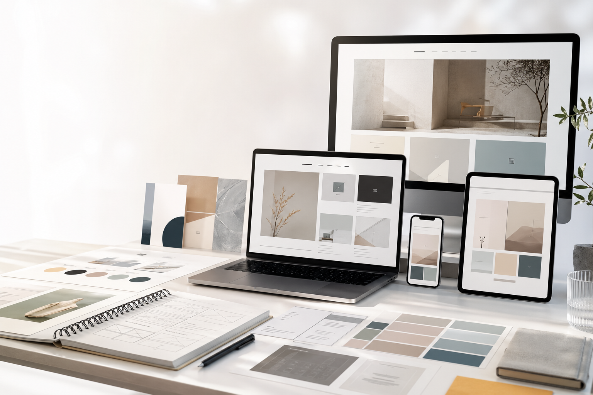

Brand Site
コーポレートサイト
暮らしの道具店リニューアル
余白と写真の見え方を整え、商品ストーリーが読み進めやすい構成へ再設計。

Approach
目的整理、情報設計、ビジュアルデザイン、実装を見据えたコンポーネント設計まで。小さな違和感を減らし、閲覧者が迷わず行動できるサイトを目指します。
Selected Works
コーポレートサイト
余白と写真の見え方を整え、商品ストーリーが読み進めやすい構成へ再設計。
LPデザイン
訴求、比較、導入事例を短時間で把握できる導線に整理し、CTAを明確化。
WebアプリUI
繰り返し使う業務画面として、一覧性と操作の迷いにくさを重視して設計。
Services
ブランドサイト、採用サイト、個人事業のサイトなど、目的に合わせて構成からデザインします。
伝える順番、見出し、CTA、信頼要素を整理し、成果につながる1ページを制作します。
既存画面の使いにくさを洗い出し、フォーム、一覧、管理画面を見直します。
About
東京を拠点に活動するWebデザイナー。小規模事業者からスタートアップまで、言葉とビジュアルの整理を通して、見る人にまっすぐ届くWeb体験を作っています。
Contact
制作内容、予算感、公開時期がまだ曖昧でも大丈夫です。まずは現在の課題から一緒に整理します。